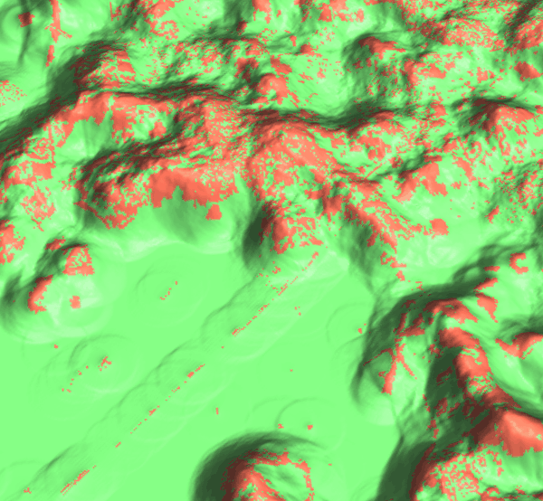

DESCRIPTION
Module r.futures.potsurface is a support tool for
computing development probability surface based on maps and coefficients
selected by r.futures.potential.
It computes the initial probability surface used in the patch growing algorithm in
r.futures.simulation.
It is not necessary to use this module, however it is useful to inspect
the potential surface to better understand the input data
and how the predictors influence the probability.
The values range from 0 (unlikely to be developed) to 1 (high probability of development).
The inputs are the output file from r.futures.potential
and the name of the subregions raster map.
EXAMPLES
r.futures.potsurface input=potential.csv subregions=counties output=pot_surface

Figure: We can visualize the potential surface in 3D and drape raster
representing developed (red) and undeveloped (green) cells over it.
REFERENCES
-
Meentemeyer, R. K., Tang, W., Dorning, M. A., Vogler, J. B., Cunniffe, N. J., & Shoemaker, D. A. (2013).
FUTURES: Multilevel Simulations of Emerging Urban-Rural Landscape Structure Using a Stochastic Patch-Growing Algorithm.
Annals of the Association of American Geographers, 103(4), 785-807.
DOI: 10.1080/00045608.2012.707591
-
Dorning, M. A., Koch, J., Shoemaker, D. A., & Meentemeyer, R. K. (2015).
Simulating urbanization scenarios reveals tradeoffs between conservation planning strategies.
Landscape and Urban Planning, 136, 28-39.
DOI: 10.1016/j.landurbplan.2014.11.011
-
Petrasova, A., Petras, V., Van Berkel, D., Harmon, B. A., Mitasova, H., & Meentemeyer, R. K. (2016).
Open Source Approach to Urban Growth Simulation.
Int. Arch. Photogramm. Remote Sens. Spatial Inf. Sci., XLI-B7, 953-959.
DOI: 10.5194/isprsarchives-XLI-B7-953-2016
-
Sanchez, G.M., A. Petrasova, A., M.M. Skrip, E.L. Collins, M.A. Lawrimore,
J.B. Vogler, A. Terando, J. Vukomanovic, H. Mitasova, and R.K. Meentemeyer (2023).
Spatially interactive modeling of land change identifies location-specific adaptations most likely to lower future flood risk.
Sci Rep 13, 18869.
DOI: 10.1038/s41598-023-46195-9
SEE ALSO
FUTURES,
r.futures.simulation,
r.futures.parallelpga,
r.futures.potential,
r.futures.devpressure,
r.futures.demand,
r.futures.calib,
r.futures.gridvalidation,
r.futures.validation,
r.sample.category
AUTHORS
Corresponding author:
Anna Petrasova, akratoc ncsu edu,
Center for Geospatial Analytics, NCSU
Original standalone version:
Ross K. Meentemeyer,
Wenwu Tang,
Monica A. Dorning,
John B. Vogler,
Nik J. Cunniffe,
Douglas A. Shoemaker
(Department of Geography and Earth Sciences, UNC Charlotte)
Jennifer A. Koch
(Center for Geospatial Analytics, NCSU)
Port to GRASS and GRASS-specific additions:
Vaclav Petras,
NCSU GeoForAll
Development pressure, demand, calibration, validation, preprocessing tools and maintenance:
Anna Petrasova,
NCSU GeoForAll
Climate forcing submodel:
Anna Petrasova,
NCSU GeoForAll
Georgina Sanchez,
Center for Geospatial Analytics, NCSU
Zoning:
Margaret Lawrimore,
Center for Geospatial Analytics, NCSU
Anna Petrasova,
NCSU GeoForAll